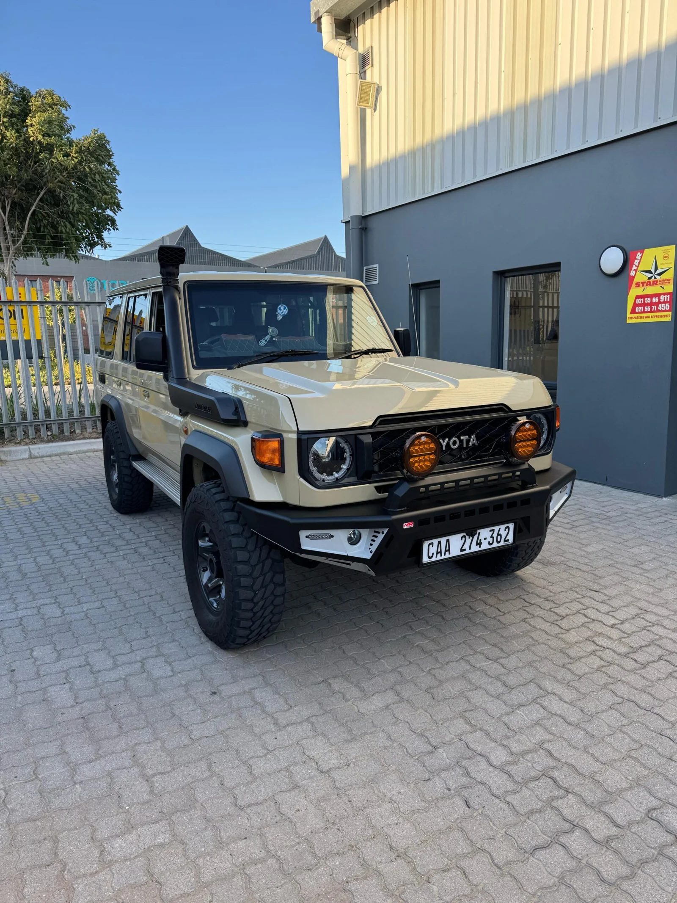
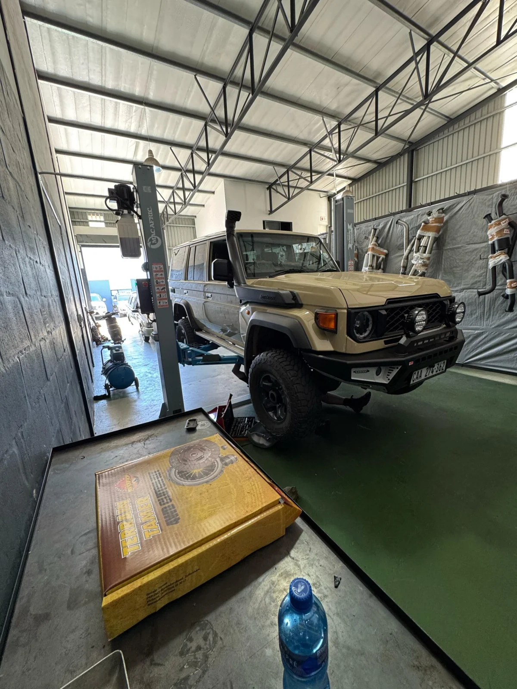

Performance
with purpose.
Bolt-on exhaust systems and ECU remapping. Talk to us about the right setup for your vehicle and the way you drive.
Exhausts / ECU tuning
Performance for the everyday.
Capability for the way out there.


From the weekday workhorse to your next overland trip. Bring us your vehicle, your plans and the things you want to improve.
Bolt-on exhaust systems and ECU remapping. Talk to us about the right setup for your vehicle and the way you drive.
Exhausts / ECU tuningSuspension upgrades, shock replacements and mechanical maintenance to prepare your 4x4 for the kilometres ahead.
Suspension / MaintenanceRoof racks, protection accessories, lighting and touring equipment for the trips you keep talking about.
Accessories / TouringSeat covers, moulded carpets and practical interior upgrades for working bakkies and weekend explorers.
Interior / Everyday use
THE WORKSHOP / CAPE TOWNBetter performance. More comfort. Another reason to take the long way home. What started with our own vehicles grew into helping friends, family and fellow enthusiasts get more from theirs.
Today, that same hands-on passion lives in our Rivergate workshop.
Meet KrachtA closer look at EFS suspension fitment in the workshop.
Explore completed jobs ↗Predator roof-rack fitment and pre-trip checks for an FJ Cruiser heading into Africa.
Explore completed jobs ↗Tougher seat covers and moulded carpets for a hard-working Land Cruiser.
Explore completed jobs ↗“Huge thanks to Wynand and his team for their top-tier professionalism and helpful service.”
J McLaren · Google reviewRead our Google reviews ↗
Tell us what you drive.
Tell us where you want to take it.